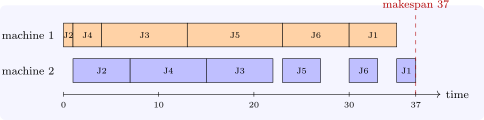

11.4 Sequencing jobs
In sequencing, \(n\) jobs must be processed on one or more machines, and the order is to be chosen. There are \(n!\) orders, but for several important criteria a simple rule is optimal, and the proofs all use the same exchange argument: if an order violates the rule, two adjacent jobs are out of place, and swapping them does not make the schedule worse.
Proposition 11.4.1. On a single machine, processing the jobs in order of shortest processing time (SPT) minimises the total (equivalently, the mean) completion time. Processing them in order of earliest due date (EDD) minimises the maximum lateness.
Proof. Suppose jobs \(i\) and \(j\) are adjacent, \(i\) first, with \(p_i > p_j\), starting at time \(t\). Swapping them leaves all other completion times unchanged, and changes the completion times of \(i\) and \(j\) from \(t + p_i\) and \(t + p_i + p_j\) to \(t + p_j\) and \(t + p_i + p_j\), reducing the sum by \(p_i - p_j > 0\). So an optimal order has no such pair: it is SPT. For EDD, if \(d_i > d_j\) with \(i\) first, the later of the two finishes at \(t + p_i + p_j\) in either order; before the swap the lateness of \(j\) is \(t + p_i + p_j - d_j\), which is at least both latenesses after it, since \(d_j < d_i\) and the earlier job finishes sooner. So swapping does not increase the maximum lateness. □
Two machines in series. Each job goes first to machine \(1\) for time \(a_j\) and then to machine \(2\) for time \(b_j\), in the same order on both (a flow shop). The aim is to minimise the makespan, the time the last job leaves machine \(2\).
Theorem 11.4.2 (Johnson’s rule, 1954). An order minimising the makespan is: first the jobs with \(a_j < b_j\), in increasing order of \(a_j\); then the jobs with \(a_j \geq b_j\), in decreasing order of \(b_j\).
Sketch. The makespan of an order is \(\max _k\bigl (\sum _{i \leq k}a_{(i)} + \sum _{i \geq k}b_{(i)}\bigr )\), the longest path through the grid of operations, where \((i)\) is the \(i\)th job. If two adjacent jobs \(i\) then \(j\) satisfy \(\min (a_j, b_i) < \min (a_i, b_j)\), swapping them does not increase any of these path lengths. Johnson’s order is exactly an order with no such adjacent pair (jobs placed early are those with small \(a\), so that machine \(2\) starts soon, and jobs placed late are those with small \(b\), so that it finishes soon), and every order can be brought to it by such swaps. □
Example 11.4.3. Six jobs have times \((a_j, b_j)\): \(J_1\) \((5, 2)\), \(J_2\) \((1, 6)\), \(J_3\) \((9, 7)\), \(J_4\) \((3, 8)\), \(J_5\) \((10, 4)\), \(J_6\) \((7, 3)\). The jobs with \(a_j < b_j\) are \(J_2\), \(J_4\), in increasing \(a\); the rest are \(J_3\), \(J_5\), \(J_6\), \(J_1\) in decreasing \(b\) (\(7, 4, 3, 2\)). Johnson’s order \(J_2, J_4, J_3, J_5, J_6, J_1\) has makespan \(37\) (Figure 11). Checking all \(720\) orders confirms that \(37\) is the minimum; the worst order takes \(52\) (Software 11.5.3).

For three machines Johnson’s rule applies to the two-machine problem with times \(a_j + b_j\) and \(b_j + c_j\) when the middle machine is dominated (\(\min a_j \geq \max b_j\) or \(\min c_j \geq \max b_j\)); in general the flow shop with three or more machines is NP-hard, and branch and bound or heuristics are used.
Questions on this section
Stuck on something here? Ask below and it stays attached to this topic.